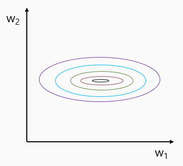

Training and Test datasets
7장 부터는 Training data set과 Test dataset을 나눠서 학습 후 Test해본다.
이전에 Training dataset과 Test dataset을 동일하게 사용했던 것은 잘못된 방법이다.
이 후로는 dataset을 반드시 나눠서 진행한다.
learning rate and evaluation.py
# Lab 7 Learning rate and Evaluation
import tensorflow as tf
tf.set_random_seed(777) # for reproducibility
x_data = [[1, 2, 1], [1, 3, 2], [1, 3, 4], [1, 5, 5], [1, 7, 5], [1, 2, 5], [1, 6, 6], [1, 7, 7]]
y_data = [[0, 0, 1], [0, 0, 1], [0, 0, 1], [0, 1, 0], [0, 1, 0], [0, 1, 0], [1, 0, 0], [1, 0, 0]]
# Evaluation our model using this test dataset
x_test = [[2, 1, 1], [3, 1, 2], [3, 3, 4]]
y_test = [[0, 0, 1], [0, 0, 1], [0, 0, 1]]
X = tf.placeholder("float", [None, 3])
Y = tf.placeholder("float", [None, 3])
W = tf.Variable(tf.random_normal([3, 3]))
b = tf.Variable(tf.random_normal([3]))
# tf.nn.softmax computes softmax activations
# softmax = exp(logits) / reduce_sum(exp(logits), dim)
hypothesis = tf.nn.softmax(tf.matmul(X, W) + b)
# Cross entropy cost/loss
cost = tf.reduce_mean(-tf.reduce_sum(Y * tf.log(hypothesis), axis=1))
# Try to change learning_rate to small numbers
optimizer = tf.train.GradientDescentOptimizer(
learning_rate=1e-10).minimize(cost)
# Correct prediction Test model
prediction = tf.arg_max(hypothesis, 1)
is_correct = tf.equal(prediction, tf.arg_max(Y, 1))
accuracy = tf.reduce_mean(tf.cast(is_correct, tf.float32))
# Launch graph
with tf.Session() as sess:
# Initialize TensorFlow variables
sess.run(tf.global_variables_initializer())
for step in range(201):
cost_val, W_val, _ = sess.run([cost, W, optimizer],
feed_dict={X: x_data, Y: y_data})
if step % 10 == 0 :
print(step, cost_val, W_val)
# predict
print("Prediction:", sess.run(prediction, feed_dict={X: x_test}))
# Calculate the accuracy
print("Accuracy: ", sess.run(accuracy, feed_dict={X: x_test, Y: y_test}))결과 창
# when learning_rate = 0.1
0 5.7320304 [[ 0.8026957 0.6786129 -1.2172831]
[-0.3051686 -0.3032113 1.508257 ]
[ 0.7572236 -0.7008909 -2.108204 ]]
10 1.8107473 [[ 0.51069576 0.7242208 -0.97089106]
[-0.6880559 -0.07979492 1.667728 ]
[ 0.09174844 -0.2783959 -1.8652234 ]]
20 1.6319022 [[ 0.34424353 0.697731 -0.77794915]
[-0.5087992 -0.1511724 1.5598489 ]
[-0.01327916 -0.21204934 -1.8265425 ]]
30 1.4866805 [[ 0.19042481 0.66771364 -0.59411305]
[-0.36517674 -0.18683061 1.4518847 ]
[-0.09453441 -0.1751083 -1.7822282 ]]
40 1.3655303 [[ 0.04948435 0.63452643 -0.4199854 ]
[-0.2499466 -0.19529302 1.345117 ]
[-0.15579163 -0.16278853 -1.7332908 ]]
50 1.2616253 [[-0.07961339 0.5995439 -0.25590512]
[-0.15577514 -0.18450925 1.2401617 ]
[-0.20293105 -0.16779882 -1.681141 ]]
60 1.1709411 [[-0.19820727 0.56406736 -0.10183473]
[-0.07677641 -0.16100253 1.1376562 ]
[-0.24041046 -0.18429044 -1.6271698 ]]
70 1.0911509 [[-0.3076231 0.5291084 0.04254003]
[-0.00888473 -0.12956117 1.0383233 ]
[-0.27108765 -0.20800221 -1.5727808 ]]
80 1.0208256 [[-0.4090549 0.49540257 0.17767768]
[ 0.05055725 -0.09362645 0.9429468 ]
[-0.29664138 -0.23582587 -1.5194033 ]]
90 0.95901155 [[-0.5035256 0.46347186 0.30407912]
[ 0.10324585 -0.05571542 0.8523472 ]
[-0.31798553 -0.265427 -1.4684582 ]]
100 0.9049994 [[-0.5918855 0.43368164 0.42222935]
[ 0.15024284 -0.01771591 0.76735073]
[-0.33556888 -0.29500777 -1.421294 ]]
...
190 0.66970575 [[-1.201988 0.2770909 1.188923 ]
[ 0.36946362 0.21526524 0.31514907]
[-0.36544818 -0.42804983 -1.2583727 ]]
200 0.6719701 [[-1.2573261 0.27155524 1.249797 ]
[ 0.3714512 0.23348567 0.29494116]
[-0.36554793 -0.42326292 -1.2630599 ]]
Prediction: [2 2 2]
Accuracy: 1.0Learning rate : NaN!
기존의 learning_rate는 0.1 또는 0.01로 무작정 정하여 진행하였다.
learning_rate를 잘못 설정할 경우 아래 두 가지 상황에 직면할 수 있다.
위의 SourceCode에서 learning_rate만 바꾸어서 결과를 관측해보자.
overshooting case (large learning rate)
# result when learning_rate = 1.5
0 5.7320304 [[ 0.8026957 0.6786129 -1.2172831]
[-0.3051686 -0.3032113 1.508257 ]
[ 0.7572236 -0.7008909 -2.108204 ]]
10 nan [[nan nan nan] <-- 이부분에서 이미 overshooting이 일어남 -->
[nan nan nan]
[nan nan nan]]
20 nan [[nan nan nan]
[nan nan nan]
[nan nan nan]]
30 nan [[nan nan nan]
[nan nan nan]
[nan nan nan]]
40 nan [[nan nan nan]
[nan nan nan]
[nan nan nan]]
...
190 nan [[nan nan nan]
[nan nan nan]
[nan nan nan]]
200 nan [[nan nan nan]
[nan nan nan]
[nan nan nan]]
Prediction: [0 0 0]
Accuracy: 0.0local minimum에 갇힌 경우 (small learning rate)
# result when learning_rate = 1e-10
0 5.7320304 [[ 0.8026957 0.6786129 -1.2172831]
[-0.3051686 -0.3032113 1.508257 ]
[ 0.7572236 -0.7008909 -2.108204 ]]
10 5.7320304 [[ 0.8026957 0.6786129 -1.2172831]
[-0.3051686 -0.3032113 1.508257 ]
[ 0.7572236 -0.7008909 -2.108204 ]]
20 5.7320304 [[ 0.8026957 0.6786129 -1.2172831]
[-0.3051686 -0.3032113 1.508257 ]
[ 0.7572236 -0.7008909 -2.108204 ]]
30 5.7320304 [[ 0.8026957 0.6786129 -1.2172831]
[-0.3051686 -0.3032113 1.508257 ]
[ 0.7572236 -0.7008909 -2.108204 ]]
40 5.7320304 [[ 0.8026957 0.6786129 -1.2172831]
[-0.3051686 -0.3032113 1.508257 ]
[ 0.7572236 -0.7008909 -2.108204 ]]
50 5.7320304 [[ 0.8026957 0.6786129 -1.2172831]
[-0.3051686 -0.3032113 1.508257 ]
[ 0.7572236 -0.7008909 -2.108204 ]]
60 5.7320304 [[ 0.8026957 0.6786129 -1.2172831]
[-0.3051686 -0.3032113 1.508257 ]
[ 0.7572236 -0.7008909 -2.108204 ]]
70 5.7320304 [[ 0.8026957 0.6786129 -1.2172831]
[-0.3051686 -0.3032113 1.508257 ]
[ 0.7572236 -0.7008909 -2.108204 ]]
80 5.7320304 [[ 0.8026957 0.6786129 -1.2172831]
[-0.3051686 -0.3032113 1.508257 ]
[ 0.7572236 -0.7008909 -2.108204 ]]
90 5.7320304 [[ 0.8026957 0.6786129 -1.2172831]
[-0.3051686 -0.3032113 1.508257 ]
[ 0.7572236 -0.7008909 -2.108204 ]]
100 5.7320304 [[ 0.8026957 0.6786129 -1.2172831] <-- 당최 아무리 -->
[-0.3051686 -0.3032113 1.508257 ]
[ 0.7572236 -0.7008909 -2.108204 ]]
...
190 5.7320304 [[ 0.8026957 0.6786129 -1.2172831] <-- 학습을 시켜도 -->
[-0.3051686 -0.3032113 1.508257 ]
[ 0.7572236 -0.7008909 -2.108204 ]]
200 5.7320304 [[ 0.8026957 0.6786129 -1.2172831] <-- cost값이 변하지 않음 -->
[-0.3051686 -0.3032113 1.508257 ]
[ 0.7572236 -0.7008909 -2.108204 ]]
Prediction: [0 0 0] <-- 참혹한 결과 -->
Accuracy: 0.0Non-normalized inputs
xy = np.array([[828.659973, 833.450012, 908100, 828.349976, 831.659973],
[823.02002, 828.070007, 1828100, 821.655029, 828.070007],
[819.929993, 824.400024, 1438100, 818.97998, 824.159973],
[816, 820.958984, 1008100, 815.48999, 819.23999],
[819.359985, 823, 1188100, 818.469971, 818.97998],
[819, 823, 1198100, 816, 820.450012],
[811.700012, 815.25, 1098100, 809.780029, 813.669983],
[809.51001, 816.659973, 1398100, 804.539978, 809.559998]])위와 같이 input data간의 큰 격차는(ex 833, 908100) 한쪽으로 치우친 cost함수를 생성하게 된다.
linear_regression_without_min_max.py
import tensorflow as tf
import numpy as np
tf.set_random_seed(777) # for reproducibility
xy = np.array([[828.659973, 833.450012, 908100, 828.349976, 831.659973],
[823.02002, 828.070007, 1828100, 821.655029, 828.070007],
[819.929993, 824.400024, 1438100, 818.97998, 824.159973],
[816, 820.958984, 1008100, 815.48999, 819.23999],
[819.359985, 823, 1188100, 818.469971, 818.97998],
[819, 823, 1198100, 816, 820.450012],
[811.700012, 815.25, 1098100, 809.780029, 813.669983],
[809.51001, 816.659973, 1398100, 804.539978, 809.559998]])
x_data = xy[:, 0:-1]
y_data = xy[:, [-1]]
# placeholders for a tensor that will be always fed.
X = tf.placeholder(tf.float32, shape=[None, 4])
Y = tf.placeholder(tf.float32, shape=[None, 1])
W = tf.Variable(tf.random_normal([4, 1]), name='weight')
b = tf.Variable(tf.random_normal([1]), name='bias')
# Hypothesis
hypothesis = tf.matmul(X, W) + b
# Simplified cost/loss function
cost = tf.reduce_mean(tf.square(hypothesis - Y))
# Minimize
optimizer = tf.train.GradientDescentOptimizer(learning_rate=1e-5)
train = optimizer.minimize(cost)
# Launch the graph in a session.
sess = tf.Session()
# Initializes global variables in the graph.
sess.run(tf.global_variables_initializer())
for step in range(101):
cost_val, hy_val, _ = sess.run(
[cost, hypothesis, train], feed_dict={X: x_data, Y: y_data})
print(step, "Cost: ", cost_val, "\nPrediction:\n", hy_val)결과 창
#result
0 Cost : 2455327000000.0
Prediction :
[[-1104436.2]
[-2224343. ]
[-1749606.6]
[-1226179.4]
[-1445287.1]
[-1457459.5]
[-1335740.5]
[-1700924.5]]
1 Cost : 2.6976194e+27
Prediction :
[[3.6637145e+13]
[7.3754328e+13]
[5.8019874e+13]
[4.0671625e+13]
[4.7933681e+13]
[4.8337131e+13]
[4.4302651e+13]
[5.6406082e+13]]
2 Cost : inf
Prediction :
[[-1.2143876e+21]
[-2.4446867e+21]
[-1.9231470e+21]
[-1.3481158e+21]
[-1.5888265e+21]
[-1.6021993e+21]
[-1.4684711e+21]
[-1.8696556e+21]]
3 Cost : inf
Prediction :
[[4.0252517e+28]
[8.1032447e+28]
[6.3745303e+28]
[4.4685119e+28]
[5.2663803e+28]
[5.3107063e+28]
[4.8674461e+28]
[6.1972262e+28]]
4 Cost : inf
Prediction :
[[-1.3342241e+36]
[-2.6859295e+36]
[-2.1129240e+36]
[-1.4811485e+36]
[-1.7456126e+36]
[-1.7603051e+36]
[-1.6133804e+36]
[-2.0541541e+36]]
5 Cost : inf
Prediction :
[[inf]
[inf]
[inf]
[inf]
[inf]
[inf]
[inf]
[inf]]
...Normalized inputs (min-max scale)
xy = np.array([[828.659973, 833.450012, 908100, 828.349976, 831.659973], [823.02002, 828.070007, 1828100, 821.655029, 828.070007], [819.929993, 824.400024, 1438100, 818.97998, 824.159973], [816, 820.958984, 1008100, 815.48999, 819.23999], [819.359985, 823, 1188100, 818.469971, 818.97998], [819, 823, 1198100, 816, 820.450012], [811.700012, 815.25, 1098100, 809.780029, 813.669983], [809.51001, 816.659973, 1398100, 804.539978, 809.559998]]) xy = MinMaxScaler(xy) print(xy)#result [[0.99999999 0.99999999 0. 1. 1. ] [0.70548491 0.70439552 1. 0.71881782 0.83755791] [0.54412549 0.50274824 0.57608696 0.606468 0.6606331 ] [0.33890353 0.31368023 0.10869565 0.45989134 0.43800918] [0.51436 0.42582389 0.30434783 0.58504805 0.42624401] [0.49556179 0.42582389 0.31521739 0.48131134 0.49276137] [0.11436064 0. 0.20652174 0.22007776 0.18597238] [0. 0.07747099 0.5326087 0. 0. ]]
linear_regression_min_max.py (full code)
import tensorflow as tf
import numpy as np
tf.set_random_seed(777) # for reproducibility
def MinMaxScaler(data):
numerator = data - np.min(data, 0)
denominator = np.max(data, 0) - np.min(data, 0)
# noise term prevents the zero division
return numerator / (denominator + 1e-7)
xy = np.array([[828.659973, 833.450012, 908100, 828.349976, 831.659973],
[823.02002, 828.070007, 1828100, 821.655029, 828.070007],
[819.929993, 824.400024, 1438100, 818.97998, 824.159973],
[816, 820.958984, 1008100, 815.48999, 819.23999],
[819.359985, 823, 1188100, 818.469971, 818.97998],
[819, 823, 1198100, 816, 820.450012],
[811.700012, 815.25, 1098100, 809.780029, 813.669983],
[809.51001, 816.659973, 1398100, 804.539978, 809.559998]])
# very important. It does not work without it.
xy = MinMaxScaler(xy)
print(xy)
x_data = xy[:, 0:-1]
y_data = xy[:, [-1]]
# placeholders for a tensor that will be always fed.
X = tf.placeholder(tf.float32, shape=[None, 4])
Y = tf.placeholder(tf.float32, shape=[None, 1])
W = tf.Variable(tf.random_normal([4, 1]), name='weight')
b = tf.Variable(tf.random_normal([1]), name='bias')
# Hypothesis
hypothesis = tf.matmul(X, W) + b
# Simplified cost/loss function
cost = tf.reduce_mean(tf.square(hypothesis - Y))
# Minimize
optimizer = tf.train.GradientDescentOptimizer(learning_rate=1e-5)
train = optimizer.minimize(cost)
# Launch the graph in a session.
sess = tf.Session()
# Initializes global variables in the graph.
sess.run(tf.global_variables_initializer())
for step in range(101):
cost_val, hy_val, _ = sess.run(
[cost, hypothesis, train], feed_dict={X: x_data, Y: y_data})
print(step, "Cost: ", cost_val, "\nPrediction:\n", hy_val)결과 창
#result
0 Cost: 5.701778
Prediction:
[[-0.8370166]
[-2.7884693]
[-2.1851637]
[-1.4416122]
[-1.777324 ]
[-1.6582248]
[-1.8058345]
[-2.0025578]]
1 Cost: 5.7013655
Prediction:
[[-0.83690214]
[-2.788354 ]
[-2.1850677 ]
[-1.4415381 ]
[-1.7772365 ]
[-1.6581401 ]
[-1.8057759 ]
[-2.0024986 ]]
2 Cost: 5.7009525
Prediction:
[[-0.8367877]
[-2.7882385]
[-2.1849718]
[-1.441464 ]
[-1.777149 ]
[-1.6580553]
[-1.8057173]
[-2.0024395]]
3 Cost: 5.7005396
Prediction:
[[-0.83667326]
[-2.7881231 ]
[-2.184876 ]
[-1.4413898 ]
[-1.7770612 ]
[-1.6579704 ]
[-1.8056587 ]
[-2.0023804 ]]
4 Cost: 5.700126
Prediction:
[[-0.8365588]
[-2.7880077]
[-2.1847796]
[-1.4413158]
[-1.7769737]
[-1.6578856]
[-1.8056 ]
[-2.0023215]]
...
99 Cost: 5.6610622
Prediction:
[[-0.8257135]
[-2.7770646]
[-2.1756787]
[-1.4342905]
[-1.7686745]
[-1.6498458]
[-1.8000441]
[-1.9967239]]
100 Cost: 5.6606526
Prediction:
[[-0.82559955]
[-2.7769496 ]
[-2.1755831 ]
[-1.4342167 ]
[-1.7685872 ]
[-1.6497614 ]
[-1.7999856 ]
[-1.9966651 ]]